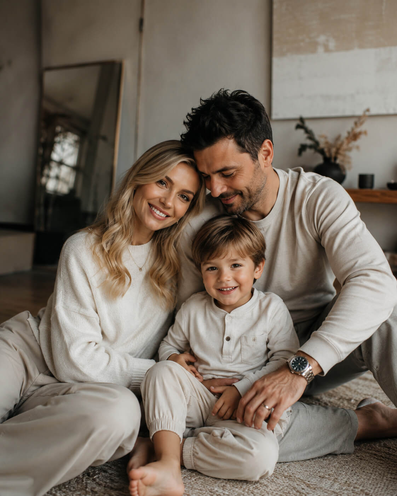

Семейная история
«Мы хотели запомнить, какими были именно сейчас»
Не парадный портрет на диване, а настоящее воскресное утро: пижамы, смех сына, объятия, которые случаются сами собой. Через десять лет именно такие кадры будут самыми ценными.